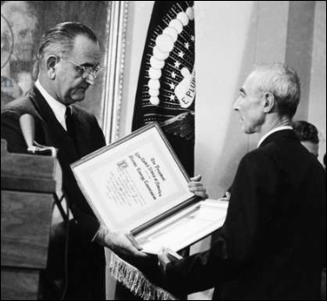
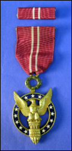
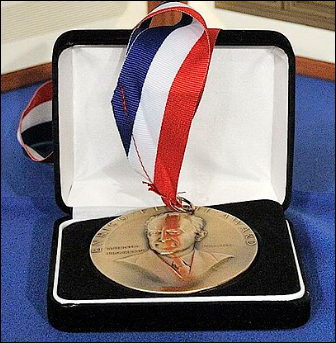

ACHIEVEMENTS OF OPPENHEIMER



ACHIEVEMENTS
Oppenheimer did important research in theoretical astronomy (especially as related to general relativity and nuclear theory), nuclear physics, spectroscopy, and quantum field theory, including its extension into quantum electrodynamics.
Oppenheimer was director of the Los Alamos Laboratory and responsible for the research and design of an atomic bomb.
AWARDS
Medal of merit (1964)
Enrico Fermi Award (1963)
*(photos of medals are respectively arranged)